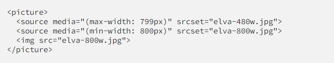

Time-saving CSS techniques to create responsive images

As a web developer, there is a high probability that you have encountered the two enemies of this article: images and deadlines.Sometimes, for some reasons, your images won’t fit the layout and you don’t want to wrap your head around this for hours.
This situation has happened to me many times and I have learned from my mistakes. No more black magic hacks — here are my five favorites techniques to handle image resizing.
the “OMG I NEED THIS ASAP” way
It’s 5:00 pm on Friday, you have to finish this page, but the images won’t fit the layout. It’s time to use your magic trick!
Sounds familiar? We’ve all done it once, doesn’t it feel like cheating to you?
Using background properties is very useful, they just work. Yet, remember that you should use them only for non-content images or as a replacement of text and in some particular cases.
The way from the future
What if I told you this kind of magic exists also for img elements? Say “hi” to the object-fit property — which also works for videos, by the way!
That’s all folks! See how when we retrieve the friendly value cover , we can also use contain.
Okay what’s the trap?
Unfortunately object-fit will not work on IE and older versions of Safari, but there is a polyfill.
The “Netflix” way
You may think ‚Äúnice trick man, one more way that doesn‚Äôt work in old browsers like IE üòî‚Äù. Don‚Äôt worry, this one works everywhere and it is my favorite! You‚Äôll need to wrap your image with a relative padded parent.
We will keep the image ratio with a percentage on the padding property. Your image will be a full size absolute child.
The code looks like this:
“Hey man, it looks complicated.”
Once you get the concept, the technique is simple and widely used. Netflix uses it!

A little demo:
The Simple way
You may already know this one:
If your layout isn’t too complicated, it works in most cases.
The Performance way (Advanced)
By performance, I mean load times. A big hero image can ruin it and make your page feel slow, especially on mobile.
Did you know that in modern browsers you can change an image source depending on your page width? That’s what srcset is made for!
You can combine them with the HTML 5 picture tag, which gracefully degrades with an img
To Recap
- Use background-image if your image is not part of the page’s content.
- Use object-fit if you don’t care about IE.
- The padded container technique, used by Netflix, works everywhere.
- In most cases, just add height: auto; in your CSS.
- If you need fast load times, use srcset to load smaller images on mobile.